FI-CAL-010 | Versión: 6 | Fecha: 19/12/2024
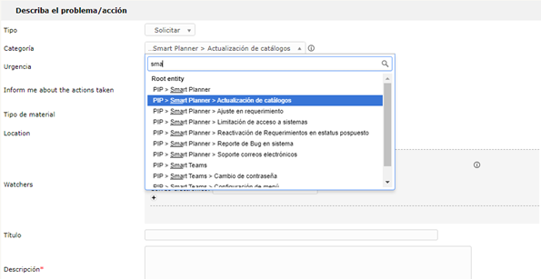
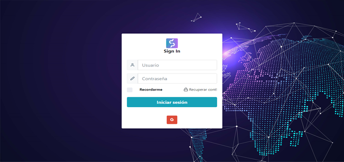
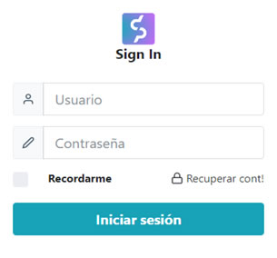
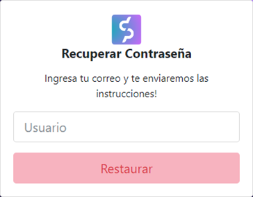
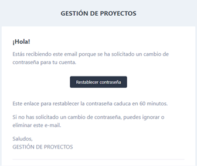
Recuerda, que sin importar la seguridad que exista dentro de un sitio, la primera causa de robo de información es debido a errores humanos, por lo que el uso de tus contraseñas es tu responsabilidad.
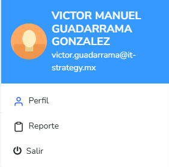
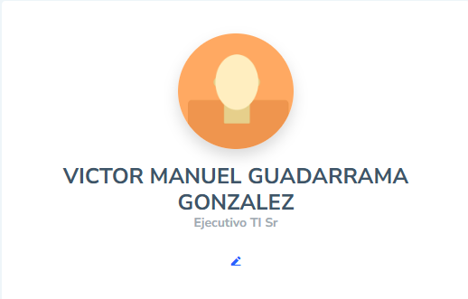
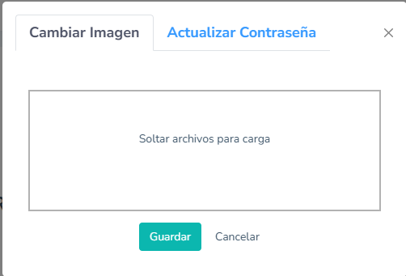
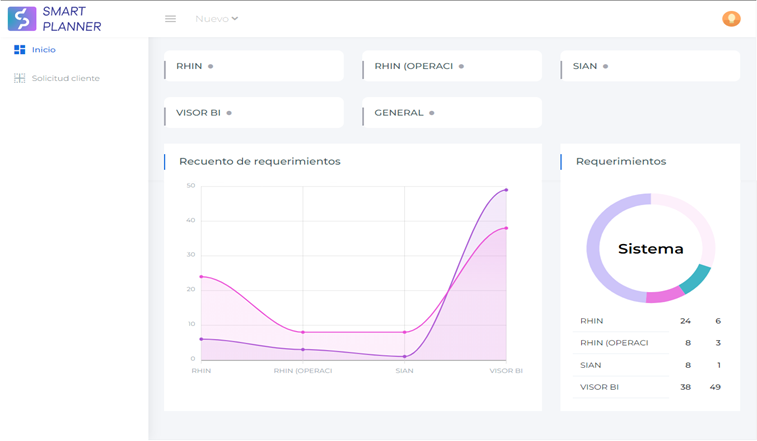
Estos datos se actualizan de forma automática.
Módulo cliente:
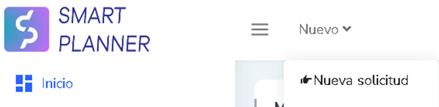
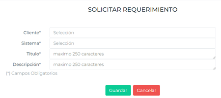
| Campo | Descripción |
|---|---|
| Cliente* | Cliente en el cual se realizará el requerimiento. |
| Sistema* | Sistema en el cual se realizará requerimiento. |
| Título* | Nombre del Requerimiento. |
| Descripción* | Detalle de la solicitud. |
Para los campos de título y descripción puedes capturar hasta máximo 250 caracteres.
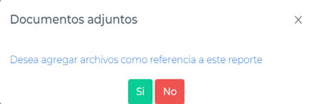
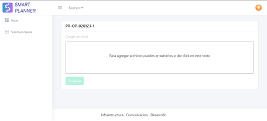
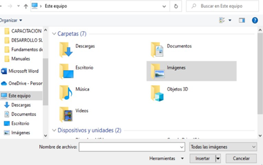
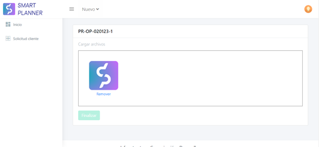
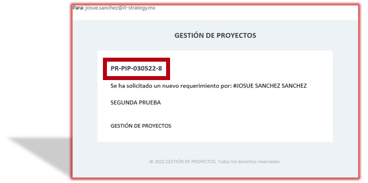
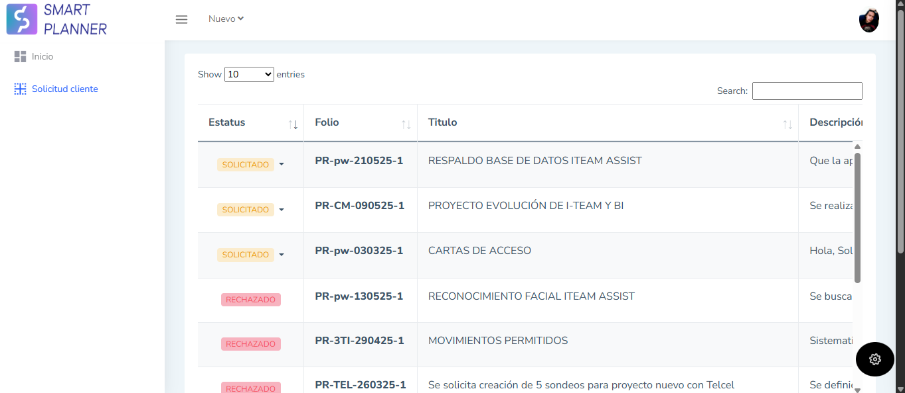
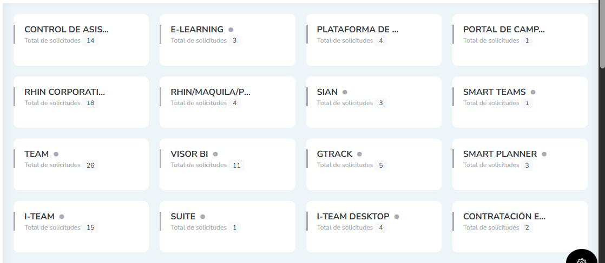
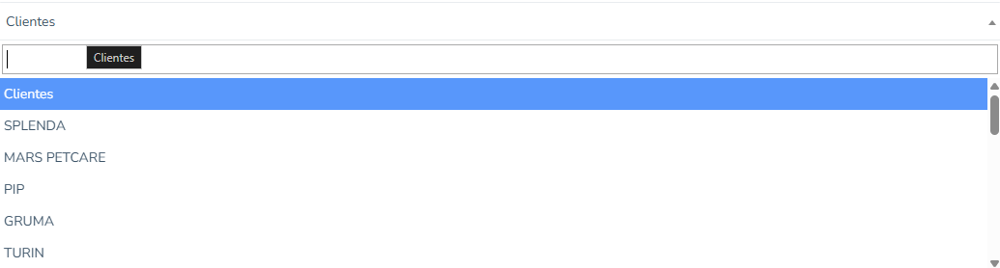
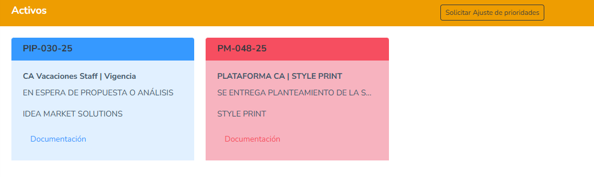
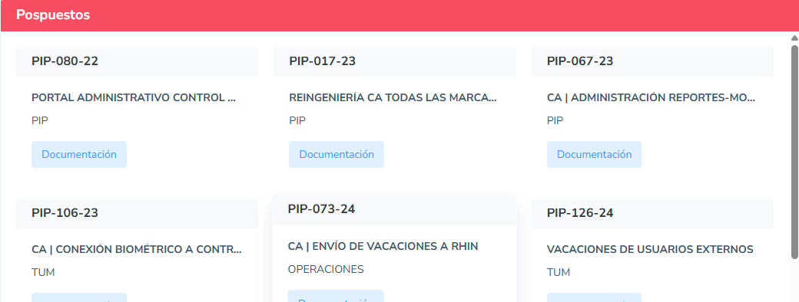
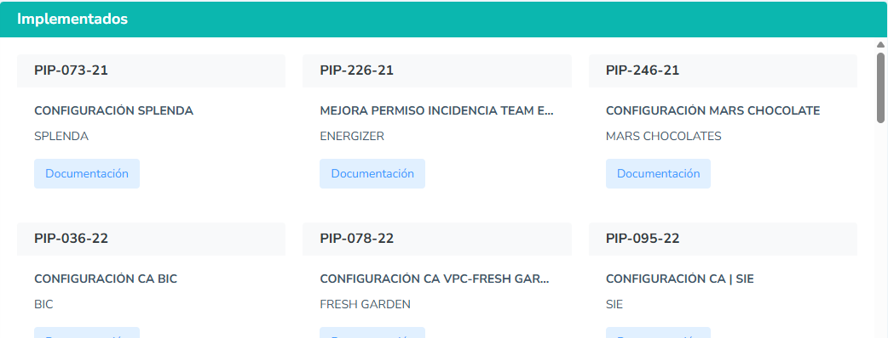
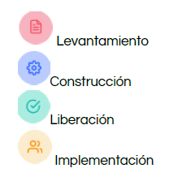
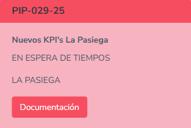
Para el rol de Arquitecto, solo tendrás acceso al estatus de "CONSTRUCCIÓN"
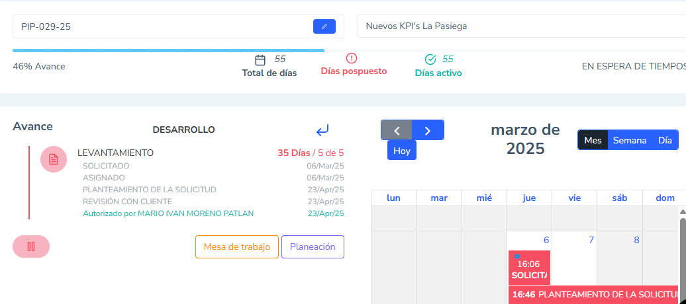
Si pausas el requerimiento se guardará la fecha y la razón de la pausa, una vez que se reactive se guardará la fecha de la misma forma, por lo que no se capturan fechas a destiempo.
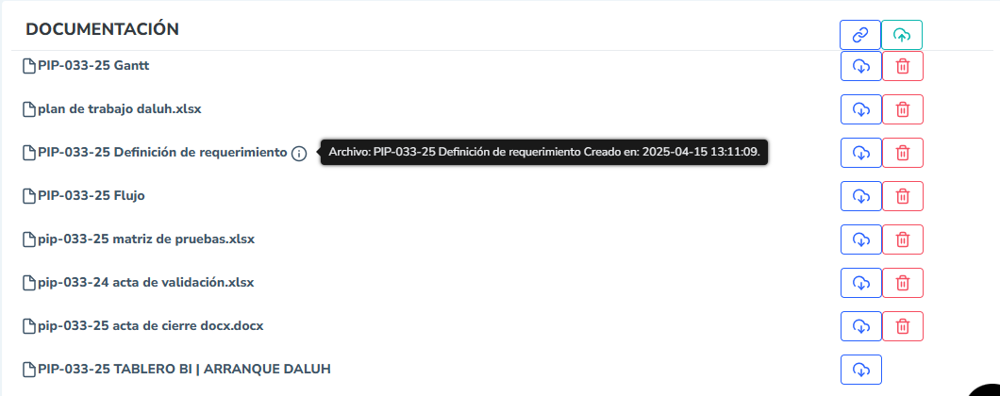
Toda la documentación que desees cargar en la web tendrá como tamaño máximo 15 MB de información, en caso de necesitar más espacio por favor contacta con soporte.
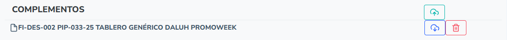
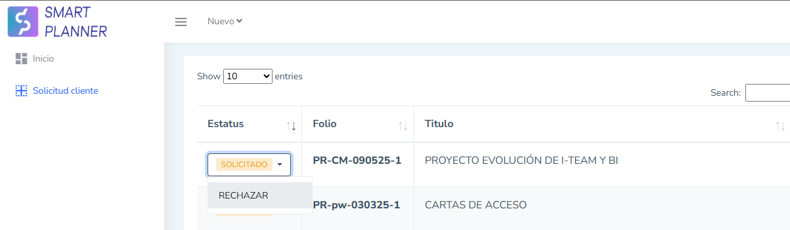
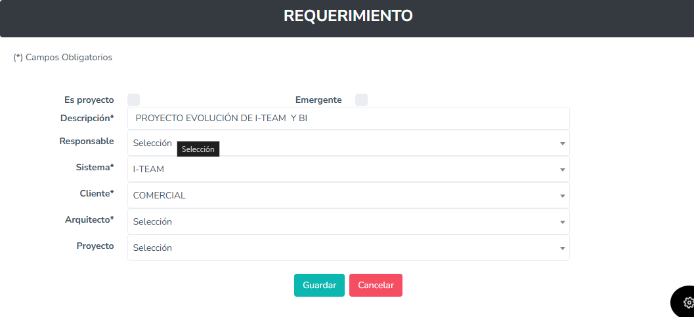
Si son demasiados, puedes filtrar con las tarjetas de clientes que están en a parte superior
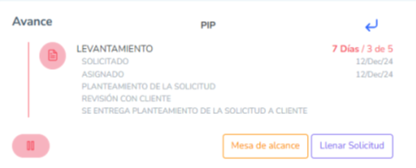
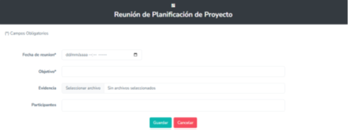
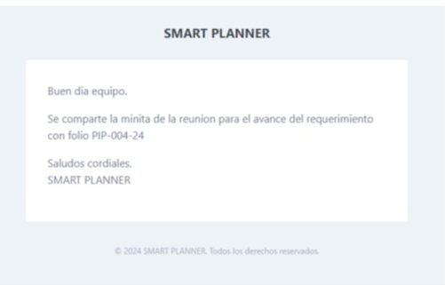
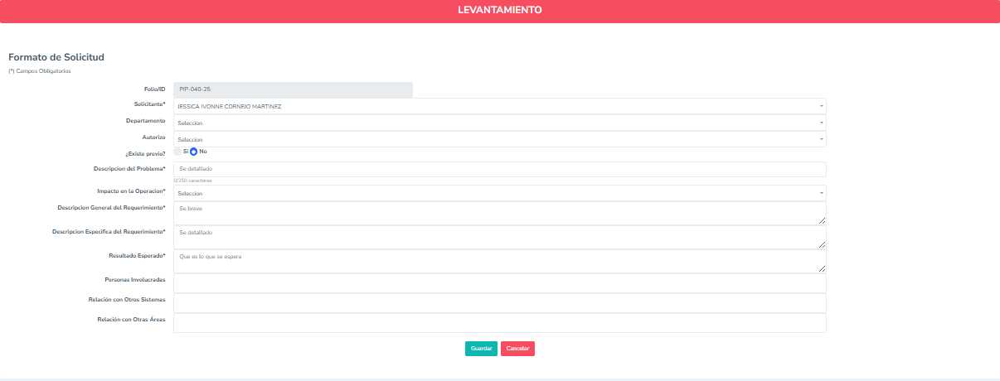
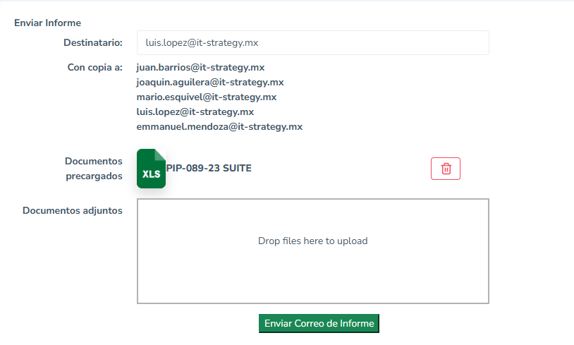
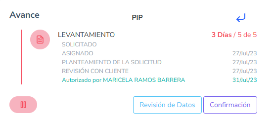
La vista de Análisis de requerimiento sólo es accesible para los Arquitectos del equipo de Desarrollo
Al igual que el "Análisis", la "Construcción" sólo es visible para los arquitectos.
En caso de dudas contacta a:
Con copia a: